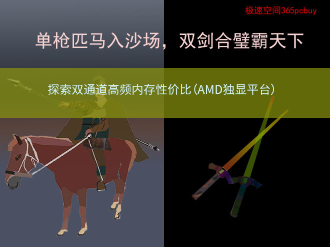
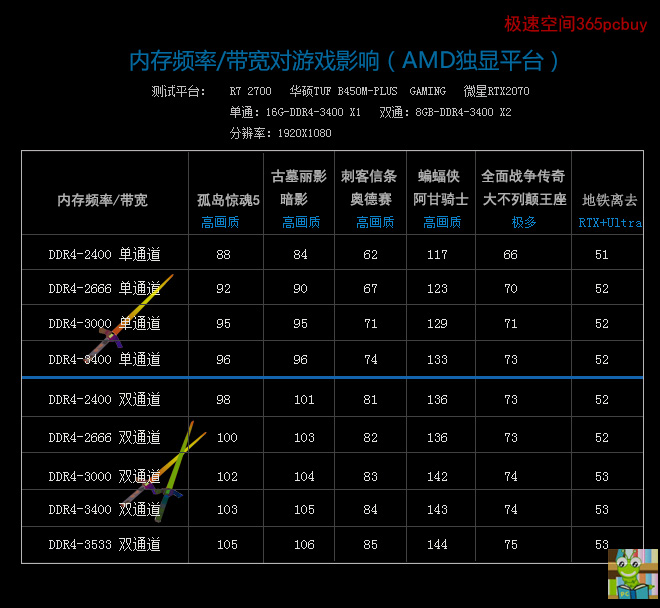
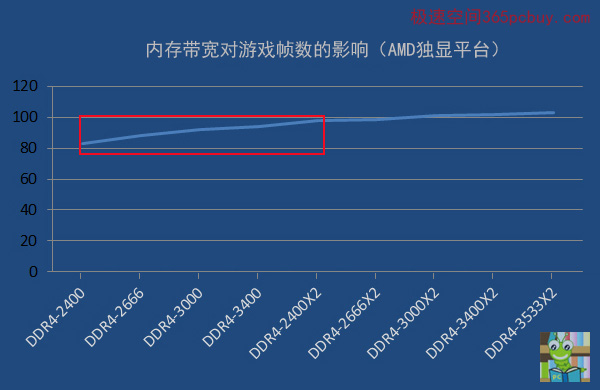
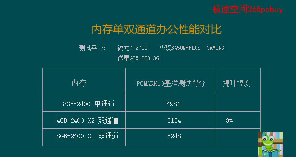

文章标题
发表时间：2019-11-10 文章浏览次数：2165 作者：pc大湿
此文发表于2019年4月7日
此文系【K先生攀岩三部曲】的第三部，在AMD独显平台上进行，通过三篇文章，将彻底讲解内存频率、内存单双通道对电脑性能的影响，助您轻松选购高性价比内存。
前两篇导读
第一部在intel核显平台：《绝壁四千尺，手抖恐闪失：高频再超频，探索内存性价比》
第二部在intel独显平台：《一阵表演猛如虎，一看门票收入2元5：探索双通高频内存性价比》
前言：
在intel双通平台表演后，Ｋ先生好像变了一个人似的，时而眉头紧锁，时而嗟然长叹，经纪人看到眼中，急在心里，如此下去这棵摇钱树要枯了。
“弟，有什么心事尽管告诉哥。”
K本来觉得难以启齿，但憋在心中难受，干脆一吐为快：“哎，没想到忍痛心这么红......”
经纪人心中已然明白了几分，轻轻说了一句：“其实，要比他红却也不难。”
K心中一振，仿佛在黑暗中看见了一丝光明。
经纪人凑到K的耳边：“不过得费点周折，如此.....这般......”
K又惊又喜，不住地点头：“此策甚妙，还得劳烦哥了。”
经纪人：“哪里话，小事一桩。”

正文
观看这次表演，您将明白内存带宽对AMD独显平台的游戏性能有多大的影响。
这次我们选了6款大型游戏，分别是《孤岛惊魂5》《刺客信条：奥德赛》《古墓丽影：暗影》《蝙蝠侠：阿甘骑士》《全面战争传奇：不列颠的王座》《地铁离去》，这三款游戏均自带BENCHMARK，能确保在公平的环境下对比。
时光荏苒，很快就过了一周，第三场表演将在AMD独显平台进行，K再次请来了忍痛心作搭档。吸取了在intel平台的教训，这次表演将一气呵成，不再分为上下半场。

图一
表演解读
1、上次intel平台采用的DDR4-3200，加电压能超频到DDR4-4000，而这次用的DDR4-3400，理论上说，达到4000MHZ更轻松，然而，最高只能上到DDR4-3533，当频率达到3600MHZ，电压加到1.4V并适当提高了时序，也无法完成奥德赛测试，自动退出。分析原因应该是主板的超频能力没有Z370好（毕竟B450定位本来就不是主打超频的），另外也和AMD平台的内存兼容性稍弱有关。
2、上次intel平台测试了三款游戏《孤岛惊魂5》《刺客信条：奥德赛》《古墓丽影：暗影》，以DDR4-2666为标准，双通比单通大约提升了13%，而AMD平台上，三款游戏平均提升了14%，略高于intel平台。
3、有的游戏对内存带宽并不感冒，如《地铁离去》。
4、如果已经是DDR4-2666双通道，再提升频率作用不大，从DDR4-2666到3533，前五款游戏的平均提升幅度只有大约4%。
转换为折线图能看得更清楚。

图二（纵坐标是五款游戏的平均帧）
从上图看出，用DDR4-2400/2666，从单通到双通，游戏帧数有一个较大幅度的提升，但如果已经是双通道，随着频率的提升，几乎走成了一条横线，帧数提升很小了。
虽然冲击4000尺、3800尺、3600尺的高度均告失败，但观众席上仍然响起了热烈的掌声，还未等K先生谢场，几十个人就向前台蜂拥过来，有的人额上、脸上、手臂上都写满了K的名字，有的人尖叫着过来抱着K先生的脸就“波波波”几下亲吻，两个小妹拉着他的手臂，激动地泪流满面。两手都被占领了，另外的人只好抱住了大腿，大声得呼喊：“我爱你！”Ｋ没有想到粉丝如此疯狂，又喜又忧，还有人不断在地涌来，场上的镁光灯不断地闪烁，Ｋ有点承受不住了，突围往后台去，跑在后面的粉丝急了，大声呼喊：“老公，等一下我......”
K不敢恋战，奋力挣脱出来，跑进后台关了门，才发现衣服已经被扯破了，手臂、颈脖上到处是血痕，好不狼狈。
第二天。
K来找经纪人，正碰上B450先生在讨要场地搭建费。
经纪人板着脸：“你还称什么特工，K连3600平台都没有上去，这次搭建费要扣20%！”
B450一脸委屈地说：“你早就知道这不是我的长项的嘛，要上4000，得去找我哥X470”
K安慰说：“算了，你的工资本来也不高，我不会少你的。”
B450前脚刚走，一个20来岁的黄衣女孩就气冲冲地走进来，正眼都不看K，直接到了经纪人面前，把一张A4纸拍在桌上：”我昨天又尖叫又哭，怎么才给130？按合同你还得再给200！“
经纪人眉头一皱，慢慢拿起这张A4，缓缓地说：“请仔细看合同第三条，你的任务是——见到偶像要激动地哭出来，有声有泪谓之哭，有泪无声谓之泣，你是有声无泪，哭泣都不算，只能算嚎，我家的K弟活的好好的，你嚎什么？要不要看现场视频？“
黄衣气的圆眼竖眉，脸红一阵青一阵，自知理亏，只得离开了。
K见到这一幕，”噗嗤“笑了。这时经纪人给Ｋ发了一个链接。打开一看，某媒体娱乐频道头版标题：“K俊耀天下，两粉丝追星受伤住院”。
K问：“三场演出结束了，我们赚了多少？”
经纪人：“一共收入了5万，支出了6.2万，亏了1.2万”
K一惊，如一盆冷水从头浇下，脸上爬满了苦瓜：“什么，还亏了！”
经纪人：“场馆租赁和搭建费3万，媒体服务1万，粉丝一条龙服务费2.2万”
“粉丝服务原来预算是1万，怎么花了2万多？”
“哎，这年头啥都在涨价啊，现在脸上写字的要80块了，尖叫的加50块，喊老公的加80块，流泪的加200块，晕倒的加300块，救护车费用500块，住院费1000元......”
经纪人见K闷闷不乐，开导说：“弟，眼光放长远点，虽然这次亏了，但名气更大了，你看，几家媒体都纷纷报道粉丝受伤住院的消息，忍痛心的风头已经被我们盖了，下次哥包你赚个盆满钵满！”
K转忧为喜：“当真？”
经纪人嘿嘿一笑：“这个自然。”
结束语
至此，K先生攀岩三部曲就结束了。在大型游戏中双通道内存的表现明显高于单通，但办公应用对内存带宽的需求不是很迫切，单通道尚可沙场一战，简单用PCMARK10测试如下

三场表演总结：
独显主机，双通内存比单通大约能提升3%的办公性能，日常办公用单通尚可。而在大型游戏中，使用双通道内存可以提升10-15%的战斗力，助你驰骋沙场，制霸天下。
在内存频率型号的选择上，截至此文发表日，DDR4-2400和2666已几乎没有差价，但8GB的DDR4-2666还比DDR4-3000少大约40元，比DDR4-3200大约少60元，差价的趋势会越来越小，哪款性价比更高主要就看差价。
有诗为证：
办公日常单通扛，大型游戏双通强，
性价比上谁拔萃？频率差价来定王。
附录：内存双通道的常见问答
问：不同品牌、频率的内存可以组建双通道么？
答：只要型号一样，如都是DDR4、即使频率不同，也可以组建双通道，大概率是兼容的。
问：4G和8G可以组双通道么？
答：可以的，这称为弹性双通道技术，很早就有，现在的主板当然支持。
问：主板有4根内存插槽，两根8G内存条插在1,3插槽，用AIDA64测试，读写是35000多，是双通道，但近期又买了根8G-2400插在2槽，虽然用CPU-Z检测是显示双通道，但用AIDA64测试读写只有18000多，实际又变回了单通道效果，这是什么原因呢？难道三根内存不能用双通道吗？
答：三根内存同样可以用双通。出现降速的原因是新买的这根内存插在了原来两根的中间，要让它靠边站（插在傍边），这样就能获得双通道速度。